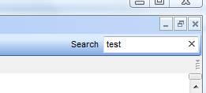
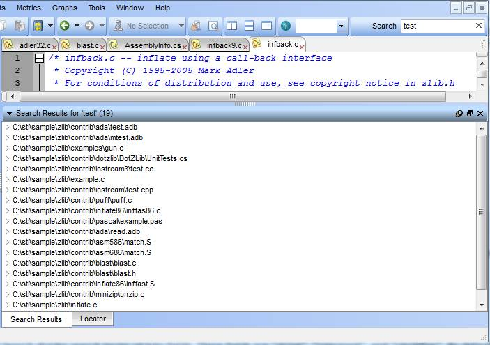

Instant Search lets you search millions of lines of source code instantly. It is so fast that if you type slowly it will be updating results based on what you are typing.
Instant Search relies on an index of your source code that is built after parsing. This index is incrementally updated as files change. Indexing happens in the background and doesn’t interfere with other Understand operations. The index crosses all projects so that making new projects doesn’t require re-indexing the same code. Search results, however, are limited to just the current project if a project is open.
The search box can be found in the upper right of Understand’s main window:

By default Instant Search looks at all of your code. For C/C++/Java/Ada it breaks up the code following syntactic and lexical conventions of the language. For other languages it breaks it up using white space and punctuation. So, for instance, in this line:
foreach (i=1, i<10, i++)
you could look for “foreach”, I,1, and 10. These are called “search
terms”.
Additionally, Instant Search divides search terms up into fields. These fields are “string”, “comment”, and “identifier”. By default it searches among all three fields, but you can limit searches to a particular field.
The simplest is to type the term you searching for, remembering that ALL searching is case insensitive:

But the syntax is richer than that, permitting some relatively complicated queries.
string: test - searches for “test” only in “strings”
identifier:test
- searches for identifiers named test
comment:
test
- searches for comments with “test” in them
test this - matches anything test OR this
test* - searches for anything beginning with “test”
te?t - searches for anything starting with “te”, then any letter, and “t”
test*bug - searches for anything starting with “test” and ending with “bug”
test~ - using a “fuzzy” search. This would match “best” “test” quest and other words “like” test
test AND bug - returns matches for documents containing test AND bug
test OR bug - same as test bug
+test bug - results must contain “test” and may contain bug
test this NOT that - results will be documents containing “test this” that also do NOT have “that”
test this –that - same as NOT above
(test this) and that - parathesis group search search queries. This would match “test or this” and then “that”.
The syntax, which is based on the Lucene syntax, is rich. More details can be found at http://scitools.com/documents/lucenesyntax.htm